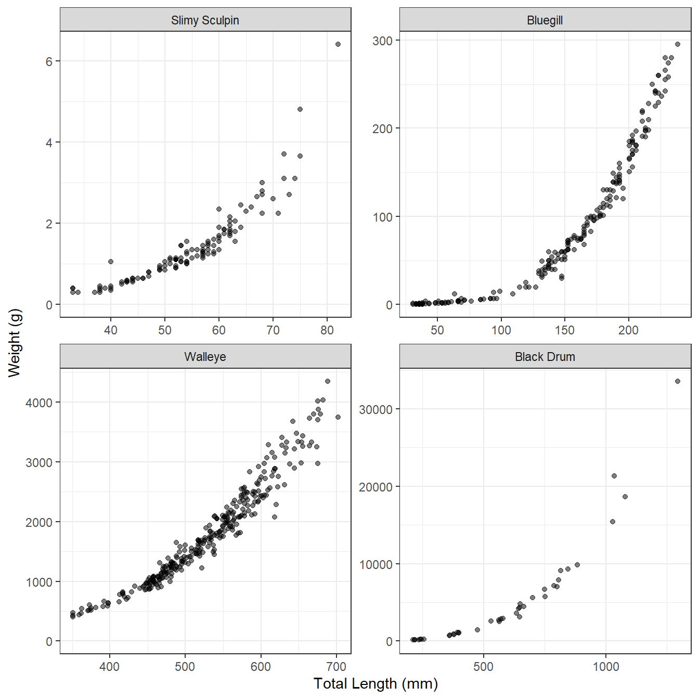
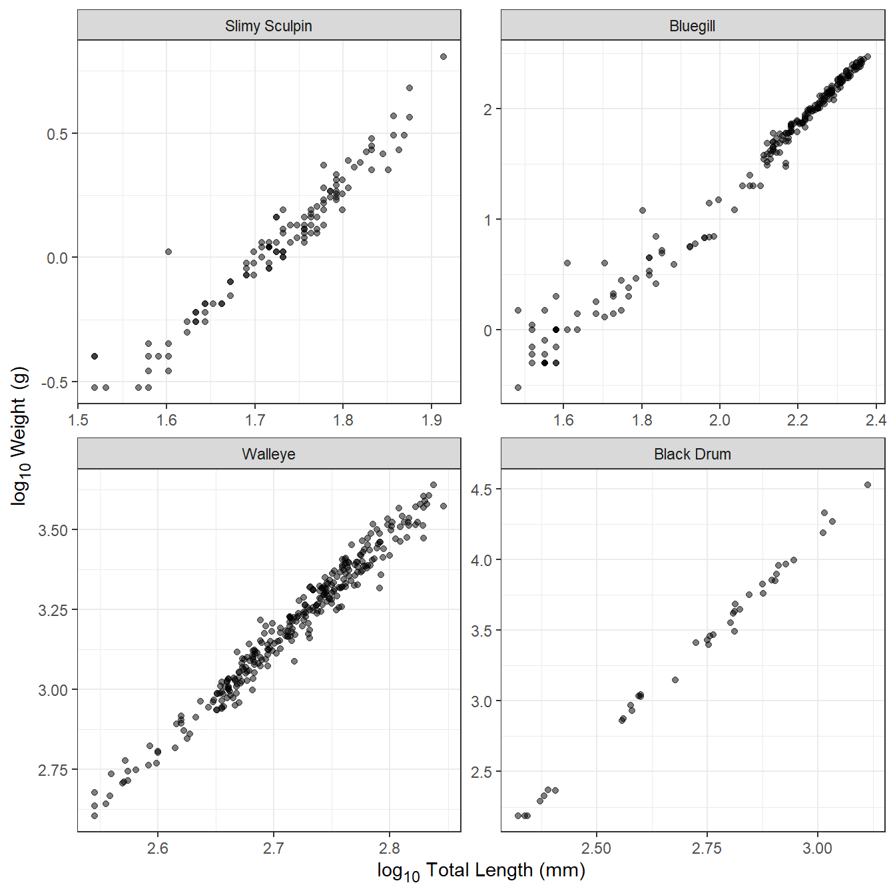
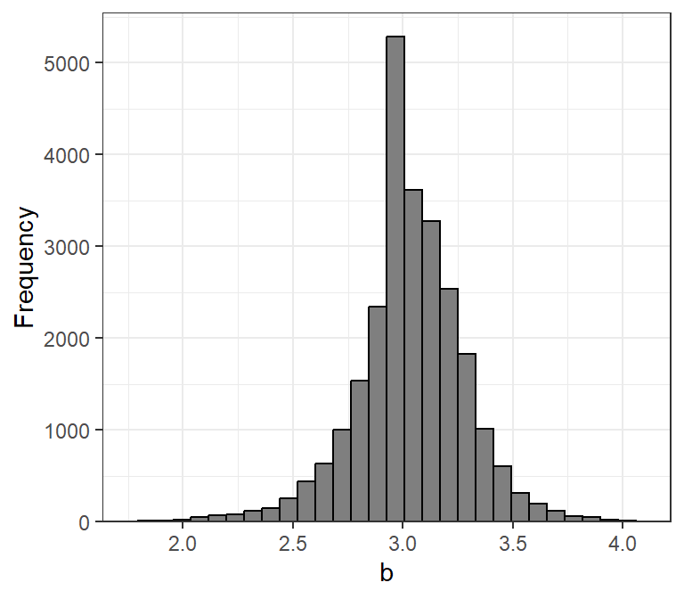
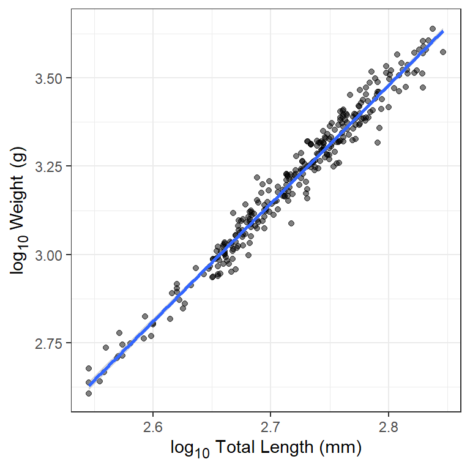

Warning
This is a work-in-progress.
Introduction
The primary response or dependent variable calculated within the yield-per-recruit (YPR) and dynamic pool (DPM) models implemented in rFAMS is yield. Yield is the amount of fish harvested from a fishery over a specified period of time and is usually, as is done in rFAMS, expressed in units of weight or biomass (e.g., g, kg, tons). As such, the YPR and DPM models need a mechanism to model weight of individual or “average” fish. This is accomplished through the weight-length relationship. The purpose of this article is to briefly describe the typical characteristics of weight-length relationships for fish, briefly show how to model a weight-length relationship in R, and show how to extract the necessary weight-length relationship parameters for use in the YPR and DPM models in rFAMS.
The following packages are used in this article.
Weight-Length Relationship
The required data for examining the weight-length relationship for a sample of fish is measurements of the weight and length of individual fish at the time of capture. In rFAMS, weight is assumed to be recorded in g and length in mm. Other data may be recorded as well (e.g., year of capture, area of capture, sex), but these other variables are not be considered in this article.
The relationship between fish weight and length tends to have two important characteristics, as illustrated for several disparate species in Figure 1. First, the relationship is not linear. The degree of non-linearity may be impacted by the range of lengths observed, with narrower ranges appearing more linear (e.g., compare Walleye to Bluegill in Figure 1). This non-linearity appears as length is inherently a one-dimensional meausure whereas weight is more akin to the three-dimensional measure of volume. Second, the variability in weight at a given length increases as the length of the fish increases (i.e., the vertical scatter of the points increases from left-to-right in Figure 1). Some of this difference is due to scale (i.e., less room for variability at smaller values of length), but some is also due to the natural increase in variability among fish over time (e.g., due to differences in foot intake and energy expenditures).

These characteristics of weight-length data suggest that a two-parameter power function (to capture the curvature) with a multiplicative error term (to capture the increase in variance) should be used to model the weight-length relationship. Specifically, the model typically used with fish is
where and are the observed weight and length of the th individual, and are constants to be estimated (i.e., model parameters), and is the multiplicative error term for the th fish. The weight-length model in Equation 1 can be transformed to a linear model by taking the logarithms of both sides and simplifying; i.e.,
$$ log_{10}\large(W_i\large)=log_{10}(a)+blog_{10}\large(L_i\large)+log_{10}\large(\epsilon_i\large) \qquad(2)$$
Any base of logarithms will work, but rFAMS assumes that common logs () are used.
With this transformation, Equation 2 is a linear function with $y=log_{10}\large(W_i\large)$, $x=log_{10}\large(L_i\large)$, slope=, and y-intercept=. In addition, the individual errors (i.e., $log_{10}\large(\epsilon_i\large)$) in Equation 2 are additive rather than multiplicative, such that the variability in $log_{10}\large(W_i\large)$ at a given $log_{10}\large(L_i\large)$ is constant for all $log_{10}\large(W_i\large)$. Thus, the log-log transformation for weight and length data tends to produce a relationship that is linear with a constant variability, as illustrated in Figure 2 for the same four disparate species.

Transformed weight-length data tend to be very strongly correlated, with values often in excess of 0.95. Individual fish that are clearly “off” the linear relationship evident for the rest of the sample often have measurements that are in error. For example, the Slimy Sculpin in Figure 2 at a log length of ~1.6 and log weight of ~0 very likely has a length measurement that is too low or a weight that is too high. Another common problem with smaller individuals of some species is that weight may have been taken with an instrument that lacked suitable precision for small individuals. This will appear in transformed weight-length plots as higher variability in log weight at lower log length values. This is apparent for Bluegill in Figure 2. Individuals that are in error should either be corrected or removed from further analysis, and individuals for which the weight was measured imprecisely may also be removed.
The exponent parameter () of the weight-length relationship averages to approximately 3 across many, many species of fish (Figure 3). For most fish, is between 2.5 and 3.5 and values of less than 2.0 or greater than 4.0 should be reconsidered as suspect. It will be shown below how rFAMS uses , but take note here that rFAMS will issue a warning if you attempt to use values of outside the range of 2 to 4.

rfishbase database.
Modeling Weight-Length in R
The advantage of log-log transforming weight-length data is that typical simple linear regression tools can be used to model the relationship. In this section, we show how to use R to model this linear relationship. This description assumes that you are familiar with the basic principles of simple linear regression.
The weight and length of Walleye from Lake Erie stored in WalleyeErie2 in the FSAdata package will be used as an example. These data are obtained and the first few rows examined below. Note that weights and lengths are in w and tl, respectively.1
data(WalleyeErie2,package="FSAdata")
head(WalleyeErie2)
#> setID loc grid year tl w sex mat age
#> 1 2003001 1 940 2003 360 460 male mature 2
#> 2 2003001 1 940 2003 371 571 male mature 2
#> 3 2003001 1 940 2003 375 507 male mature 2
#> 4 2003001 1 940 2003 375 584 male mature 2
#> 5 2003001 1 940 2003 375 537 male mature 2
#> 6 2003001 1 940 2003 376 553 male mature 2For our purposes, fish from one location (i.e., 3) and year (i.e,. 2010) will be isolated using filter() from dplyr.2 These data are stored in the new data.frame waeredux.
waeredux <- WalleyeErie2 |>
dplyr::filter(loc==3,year==2010)Transformed versions of the weight and length variables are added to the data.frame with mutate() from dplyr. Note that log10() computes common (i.e., base 10) logarithms.3
waeredux <- waeredux |>
dplyr::mutate(logw=log10(w),
logtl=log10(tl))
head(waeredux)
#> setID loc grid year tl w sex mat age logw logtl
#> 1 2010059 3 1288 2010 702 3746 female mature 9 3.573568 2.846337
#> 2 2010059 3 1288 2010 667 3325 female mature 7 3.521792 2.824126
#> 3 2010059 3 1288 2010 542 1765 female mature 3 3.246745 2.733999
#> 4 2010059 3 1288 2010 632 3143 female mature 7 3.497344 2.800717
#> 5 2010059 3 1288 2010 644 3216 female mature 7 3.507316 2.808886
#> 6 2010059 3 1288 2010 513 1467 female mature 3 3.166430 2.710117A simple linear regression model is fit with lm() using a formula of the form Y~X as the first argument and the corresponding data.frame in data=. The result should be saved to an object for further analysis.
waelm <- lm(logw~logtl,data=waeredux)The estimates of and are extracted from the saved lm() object with coef(). The estimate of is under (Intercept) and the estimates of is under the name of the “X” variable (here logtl). Thus, the estimate of is -5.877308 and the estimate of is 3.341721.
coef(waelm)
#> (Intercept) logtl
#> -5.877308 3.341721Simple linear regression analyses may require further work than what is shown here – such as assumption checking, assessing adequacy of fit, testing significance. More detailed explanations of simple linear regression should be consulted for these other aspects. However, it is good practice to examine the fitted model relative to the observed data (Figure 4) to identify any gross problems with the data or model fitting. Below demonstrates one way to do this with ggplot2.4
ggplot(data=waeredux,mapping=aes(x=logtl,y=logw)) +
geom_point(alpha=0.5) +
geom_smooth(method="lm") +
scale_y_continuous(name="log~10~ Weight (g)") +
scale_x_continuous(name="log~10~ Total Length (mm)") +
theme_bw() +
theme(axis.title.x=ggtext::element_markdown(),
axis.title.y=ggtext::element_markdown())
Extracting Parameters for Use in rFAMS
Functions to perform the YPR and DPM modeling in rFAMS all take a list or vector that contains seven required life history parameters in the lhparms= argument5. Two of those required life history parameters are called LWalpha in rFAMS and called LWbeta in rFAMS.
makeLH() is a convenience function in rFAMS that takes user-provided values for the seven life history parameters, performs adequacy checks on each,6 and then puts the values into a properly formatted list (preferably) or vector.7 In its simplest usage, makeLH() has seven required arguments, one for each of the required life history parameters. Two of these arguments are LWalpha= and LWbeta= for the two weight-length relationship parameters estimated in the previous section.
LH <- makeLH(N0=100,tmax=15,Linf=500,K=0.3,t0=-0.5,
LWalpha=-5.877308,LWbeta=3.341721)
LH
#> $N0
#> [1] 100
#>
#> $tmax
#> [1] 15
#>
#> $Linf
#> [1] 500
#>
#> $K
#> [1] 0.3
#>
#> $t0
#> [1] -0.5
#>
#> $LWalpha
#> [1] -5.877308
#>
#> $LWbeta
#> [1] 3.341721A less prone-to-error method for entering the weight-length relationship parameters is to give the object saved from lm() in the previous section to LWalpha= and not provide a value to LWbeta=. makeLH() will extract the parameter estimates from the lm() object to put in the life history parameter list.
LH <- makeLH(N0=100,tmax=15,Linf=500,K=0.3,t0=-0.5,
LWalpha=waelm)
LH
#> $N0
#> [1] 100
#>
#> $tmax
#> [1] 15
#>
#> $Linf
#> [1] 500
#>
#> $K
#> [1] 0.3
#>
#> $t0
#> [1] -0.5
#>
#> $LWalpha
#> [1] -5.877308
#>
#> $LWbeta
#> [1] 3.341721